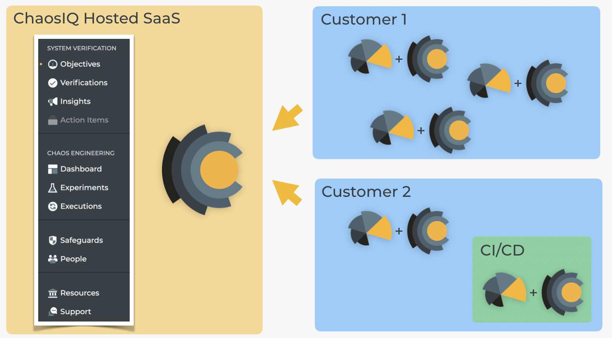
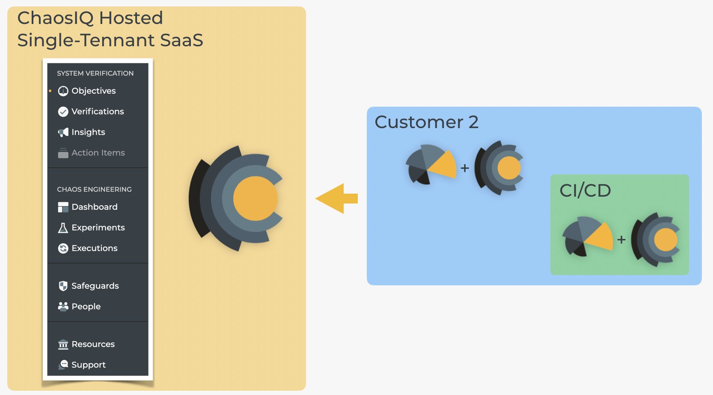
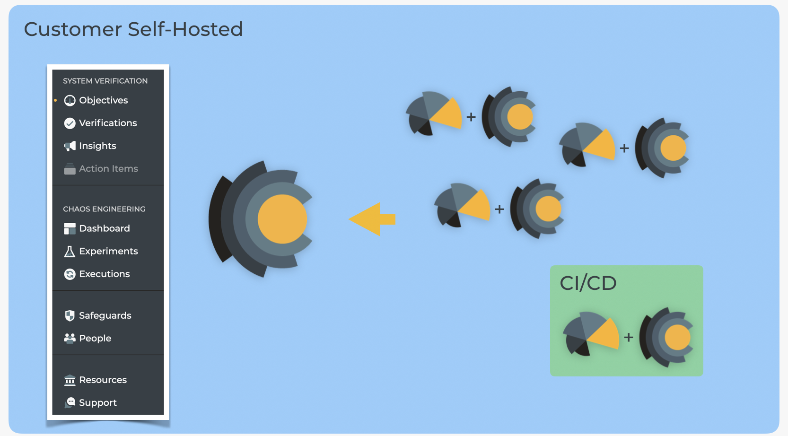

Deployment Options
You can choose from three options for your deployment of ChaosIQ, depending on your subscription plan:
- ChaosIQ SaaS
- ChaosIQ Single-Tenant
- ChaosIQ Self-Hosted
ChaosIQ SaaS¶
In the early days of the free and open source Chaos Toolkit we knew that chaos experiments themselves had to executed and, more importantly, controlled “in-house”. That was one of the motivating factors in the Chaos Toolkit’s design: a simple CLI that you could use locally as easily as possible to explore how to do chaos engineering right with an emphasis on experiments.
The Chaos Toolkit is still the open core of ChaosIQ and we remain as dedicated as ever to working closely with the whole community to make the toolkit as powerful as possible. At the same time, ChaosIQ is designed with a different, extended goal in mind.
The Chaos Toolkit is specifically designed to help individuals and organizations write and execute powerful and customizable chaos engineering experiments. Whereas ChaosIQ is designed to help organizations scale out chaos engineering and system verification across all their teams.
For this reason ChaosIQ provides a cross-organizational experience that include capabilities such as Safeguards, centralised dashboards and the authoring and execution of system verifications. All of this is provided in the first instance as a Software as a Service (SaaS), hosted by ChaosIQ on our own systems. The actual chaos engineering experiments, and system verifications, are still executed locally by the Chaos Toolkit, which is extended to add some of these capabilities including the ability to talk back to ChaosIQ:

SaaS is the default deployment option for ChaosIQ. We host the SaaS, you run the ChaosIQ-extended Chaos Toolkit wherever you want. For those that don’t want outside entities, such as ChaosIQ, to be instigating conditions in their systems, this model still fits as we don’t, by default, instigate any experiments or verifications that you don’t trigger yourself through the chaos run or chaos verify commands.
One advantage of this approach is that you get the simplest and most friendly billing plan (more clarity on our pricing is coming in a future article) that is perfect (and, we’re told, fair) for individuals as well as small and large organizations. One requirement though is that some data is pushed back to ChaosIQ so that it can apply features like Safeguards, Dashboards and Reliability Insights. For many, many customers this is a workable constraint but for those that need something different, we support two further deployment options: Single-Tenant and Self-Hosted.
The Single-Tenant SaaS Option¶
Some organizations don’t want any of their data to even reside, regardless of how temporarily, on any systems that might contain other people’s data. They might also need to make sure their ChaosIQ system is in a specific geography.
However, they also don’t need to run ChaosIQ themselves. For these customers, we provide the “Single-Tenant” deployment option:

The Single-Tenant deployment option gives our customers all the features of ChaosIQ on their own, dedicated SaaS instances, often in their own preferred geography and/or on a preferred cloud provider, and still managed and supported by ChaosIQ. We keep single-tenant deployments constantly up-to-date with our multi-tenant SaaS and so there is no difference in the overall experience.
The final category of users are those that really want to run ChaosIQ within their own organizational boundaries, however they choose to define those. In this specific case they opt for our “Self Hosted” deployment option.
The Self-Hosted Option¶
Self Hosted is often referred to as “On Premise” or an “Enterprise Option”, although it really means that the customer has to meet the requirement of running anything involved in system verification and chaos engineering, in any capacity, within and on their own systems:

For these customers we provide auto-updates to their hosted ChaosIQ systems that mean they keep as up-to-date as they choose with the ChaosIQ-hosted SaaS while running our packaged software systems within their own world.
What about customisation options?¶
All of the three deployment options, from SaaS, Single-Tenant SaaS through to Self-Hosted, offer powerful features for customisation. Whether it be integrating experiments and verifications with your own systems, or building unique safeguards, the Chaos Toolkit was built with customisation in mind, and ChaosIQ leverage and contribute to that as well.
By their nature, Self-Hosted deployments sometimes require more bespoke customisations with your systems and so part of the plan for those customers is to be able to opt for custom development from our ChaosIQ Special Ops team.
Picking from the options¶
Picking from one of the three options is as simple as:
- Do you absolutely need to run ChaosIQ for yourself? -> Talk to us about “ChaosIQ Self-Hosted”
- Do you need to have your own, dedicated ChaosIQ, possibly run in a specific geography or with a specific cloud provider, but you’re happy that it is still managed and maintained by ChaosIQ? -> Talk to us about “ChaosIQ Single-Tenant”
- Do you want to use the most cost-effective and flexible option? -> Sign-up to the ChaosIQ SaaS